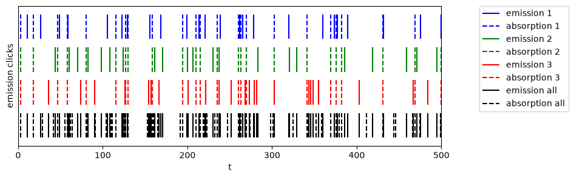
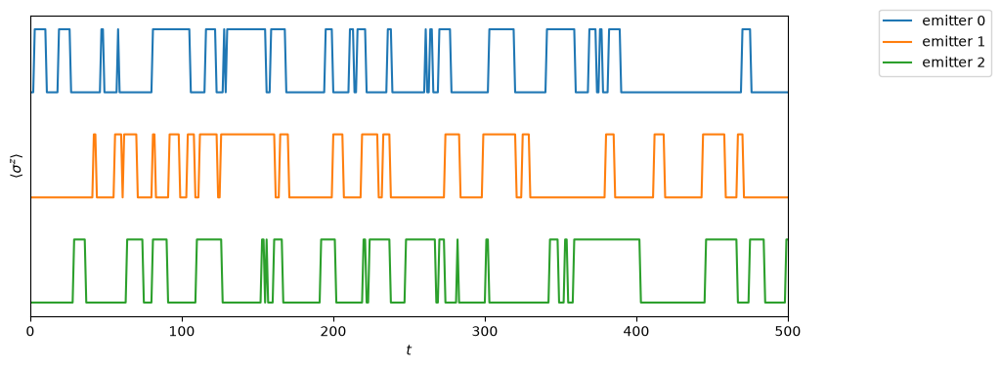
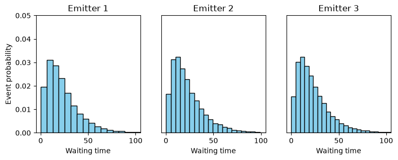
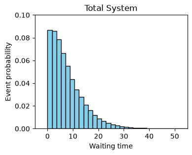
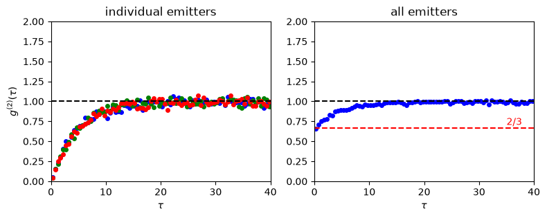

15.2. Trimer Case I: MCWF#
15.2.1. Preparation#
Parameters
import matplotlib.pyplot as plt
import numpy as np
from qutip import *
# Parameters
omega0 = 1.0
gamma0 = 0.1 # spontaneous emission rate
temperature = 1.0 # tempeature of photon gas
NT = 1/(np.exp(omega0/temperature)-1) # Planck distribution
gamma_a = gamma0 * NT # coefficient to absorption
gamma_e = gamma0 * (NT+1) # coefficient to emission
Operators for N=3
# Kronecker products of three operators
def kprod3(o1,o2,o3):
return tensor(tensor(o1,o2),o3)
#--- Spin operators ---
i2 = qeye(2)
sz = [kprod3(sigmaz(),i2,i2),kprod3(i2,sigmaz(),i2),kprod3(i2,i2,sigmaz())]
sp = [kprod3(sigmap(),i2,i2),kprod3(i2,sigmap(),i2),kprod3(i2,i2,sigmap())]
sm = [kprod3(sigmam(),i2,i2),kprod3(i2,sigmam(),i2),kprod3(i2,i2,sigmam())]
#--- Hamiltonian ---
H = 0.5*omega0*np.sum(sz)
#--- Jump operators ---
c_ops = []
# absorption
for k in range(3):
c_ops.append(np.sqrt(gamma_a)*sp[k])
# emission
for k in range(3):
c_ops.append(np.sqrt(gamma_e)*sm[k])
Energy eigenstates
label2=['e','g']
label8=[]
basis8=[]
#--- basis vectors and their name ---
for i1 in range(2):
for i2 in range(2):
for i3 in range(2):
label8.append(label2[i1]+label2[i2]+label2[i3])
basis8.append(kprod3(basis(2,i1),basis(2,i2),basis(2,i3)))
15.2.2. Monte Carlo Wave Function#
#--- the ground state as initial state
psi0 = basis8[7]
# execution time (trying to get 1000 photons)
tmax = 500 / gamma0
# number of time sampling points
tsample = 5000
times = np.linspace(0, tmax, tsample)
# options for mcsolver
opts={"store_states": True,"keep_runs_results": True, "progress_bar": False}
# get a trajectory
result = mcsolve(H,psi0,times,c_ops,e_ops=sz,ntraj=1,options=opts)
15.2.3. Clicks#
# get results
t_jump = np.array(result.col_times[0]) # time of all jumps
ch_jump = np.array(result.col_which[0]) # channel of all jumps
# absorption time for each emitters
ta_1 = t_jump[ch_jump==0]
ta_2 = t_jump[ch_jump==1]
ta_3 = t_jump[ch_jump==2]
ta_all = t_jump[(ch_jump==0) | (ch_jump==1) | (ch_jump==2)]
# emission time for each quantum dot
te_1 = t_jump[ch_jump==3]
te_2 = t_jump[ch_jump==4]
te_3 = t_jump[ch_jump==5]
te_all = t_jump[(ch_jump==3) | (ch_jump==4) | (ch_jump==5)]
print("** Jump counts **")
print(" emitter 1: emission count={0:4d} absorption count={1:4d}".format(np.size(te_1), np.size(ta_1)))
print(" emitter 2: emission count={0:4d} absorption count={1:4d}".format(np.size(te_2), np.size(ta_2)))
print(" emitter 3: emission count={0:4d} absorption count={1:4d}".format(np.size(te_3), np.size(ta_3)))
print(" total: emission count={0:4d} absorption count={1:4d}".format(np.size(te_all), np.size(ta_all)))
** Jump counts **
emitter 1: emission count= 217 absorption count= 217
emitter 2: emission count= 224 absorption count= 225
emitter 3: emission count= 201 absorption count= 202
total: emission count= 642 absorption count= 644
plt.figure(figsize=(9, 3))
# emissions: detector clicks
plt.vlines(te_1, 2.0, 2.75, color="b", label="emission 1")
plt.vlines(ta_1, 2.0, 2.75, color="b", ls='--',label="absorption 1")
plt.vlines(te_2, 1.0, 1.75, color="g", label="emission 2")
plt.vlines(ta_1, 1.0, 1.75, color="g", ls='--',label="absorption 2")
plt.vlines(te_3, 0.0, 0.75, color="r", label="emission 3")
plt.vlines(ta_1, 0.0, 0.75, color="r", ls='--',label="absorption 3")
plt.vlines(te_all, -1, -0.25, color="k", label="emission all")
plt.vlines(ta_all, -1, -0.25, color="k", ls='--',label="absorption all")
plt.ylabel("emission clicks")
plt.xlabel("t")
plt.xlim([0,500])
plt.ylim(-1.25, 3.0)
plt.yticks([])
plt.legend(bbox_to_anchor=(1.30, 1), borderaxespad=0)
plt.show()

15.2.4. Quantum trajectories#
The jump should be instantaneous but the jumps in the plot looks not instantaneous. This is an artifact due to the discreet time used in the simulation.
plt.figure(figsize=(10, 4))
p = [result.expect[k] for k in range(3)]
for k in range(3):
plt.plot(times,p[k].flatten()*0.3+(3-k),label="emitter %d" % k)
plt.yticks([])
plt.ylabel(r"$\langle\sigma^z\rangle$")
plt.xlabel(r"$t$")
plt.legend(bbox_to_anchor=(1.12, 0.8), borderaxespad=0)
plt.xlim([0,500])
plt.show()

15.2.5. Waiting time ditribution#
tlist = np.linspace(0, 4000, 8000)
# the number of realizations
ntraj = 200
# MCWF
res = mcsolve(H, basis8[7], tlist, c_ops, e_ops=[], ntraj=ntraj,
options={"keep_runs_results": True,"progress_bar": False})
# get waiting time
wtime1 = []
wtime2 = []
wtime3 = []
wtimes = []
emit1 = []
emit2 = []
emit3 = []
emits = []
for k in range(ntraj):
tj = np.asarray(res.col_times[k]) # accumulate all jumps
ch = np.asarray(res.col_which[k]) # accumulate channel info
# emitter 1 only
emit = tj[(ch == 3)]
wtime1.append(np.diff(emit))
# emitter 2 only
emit = tj[(ch == 4)]
wtime2.append(np.diff(emit))
# emitter 2 only
emit = tj[(ch == 5)]
wtime3.append(np.diff(emit))
# all emitters
emit = np.sort(tj[(ch == 3) | (ch == 4) | (ch == 5)])
wtimes.append(np.diff(emit))
wtime1 = np.concatenate(wtime1)
wtime2 = np.concatenate(wtime2)
wtime3 = np.concatenate(wtime3)
wtimes = np.concatenate(wtimes)
print("Waiting time statistics")
print("emitter photons mean deviation")
photons=wtime1.size
mean = wtime1.mean()
dev = np.sqrt((wtime1**2).mean() - mean**2)
print(" {0:5s} {1:7d} {2:7.3f} {3:7.3f}".format("1", photons, mean, dev))
photons=wtime2.size
mean = wtime2.mean()
dev = np.sqrt((wtime2**2).mean() - mean**2)
print(" {0:5s} {1:7d} {2:7.3f} {3:7.3f}".format("2", photons, mean, dev))
photons=wtime3.size
mean = wtime3.mean()
dev = np.sqrt((wtime3**2).mean() - mean**2)
print(" {0:5s} {1:7d} {2:7.3f} {3:7.3f}".format("3", photons, mean, dev))
photons=wtimes.size
mean = wtimes.mean()
dev = np.sqrt((wtimes**2).mean() - mean**2)
print(" {0:5s} {1:7d} {2:7.3f} {3:7.3f}".format("All", photons, mean, dev))
Waiting time statistics
emitter photons mean deviation
1 33843 23.370 18.143
2 33914 23.322 18.175
3 33825 23.410 18.205
All 101982 7.811 6.664
Waiting time distribution of photons from individual emitters
The waiting time distribution from individual emitters is exactly like the one from a single emitter. It is clearly subpoissonian.
plt.figure(figsize=(9, 3.0))
plt.subplot(1,3,1)
plt.hist(wtime1, density=True, bins=40, color='skyblue', edgecolor='black')
plt.xlim([-5,105])
plt.ylim([0,0.05])
plt.title("Emitter 1")
plt.xlabel("Waiting time")
plt.ylabel("Event probability")
plt.subplot(1,3,2)
plt.hist(wtime2, density=True, bins=40, color='skyblue', edgecolor='black')
plt.xlim([-5,105])
plt.ylim([0,0.05])
plt.title("Emitter 2")
plt.xlabel("Waiting time")
plt.yticks([])
plt.subplot(1,3,3)
plt.hist(wtime3, density=True, bins=40, color='skyblue', edgecolor='black')
plt.xlim([-5,105])
plt.ylim([0,0.05])
plt.title("Emitter 3")
plt.xlabel("Waiting time")
plt.yticks([])
plt.show()

Waiting time distribution of all photons
If all photons detected by the detector are counted, we have a different distribution. It seems close to poisson distribution.
plt.figure(figsize=(4,3))
plt.hist(wtimes, density=True, bins=40, color='skyblue', edgecolor='black')
plt.xlim([-5,55])
plt.ylim([0,0.1])
plt.title("Total System")
plt.xlabel("Waiting time")
plt.ylabel("Event probability")
plt.show()

15.2.6. Second order coherence#
The coherence function \(g^{(2)}(\tau)\) is evaluated from the photon counting statistics.
#--- calculate histogram
def hist(t,dtau,count):
# ordered pairs, positive delay
for i in range(t.size):
dt = t[i + 1:] - t[i]
window = dt < tau_max
if not np.any(window):
continue
b = np.floor(dt[window]/dtau).astype(int)
np.add.at(count, b, 1)
return
#--- counting parameters
tau_max = 40
dtau = 0.5
#--- edges of bins
edges = np.arange(0.0, tau_max + dtau, dtau)
#--- counting storages
count1 = np.zeros( edges.size - 1) # emitter 1
count2 = np.zeros( edges.size - 1) # emitter 2
count3 = np.zeros( edges.size - 1) # emitter 3
counts = np.zeros( edges.size - 1) # all emitters
#--- extract data from multiple runs
click1=0
click2=0
click3=0
clicks=0
for k in range(ntraj):
tj = np.asarray(res.col_times[k])
ch = np.asarray(res.col_which[k])
t1 = tj[ch == 3]
t2 = tj[ch == 4]
t3 = tj[ch == 5]
ts = tj[(ch == 3) | (ch == 4) | (ch == 5)]
# emitter 1
hist(t1,dtau,count1)
click1+=t1.size
# emitter 2
hist(t2,dtau,count2)
click2+=t2.size
# emitter 3
hist(t3,dtau,count3)
click3+=t3.size
# all emitters
hist(ts,dtau,counts)
clicks+=ts.size
#--- normalize the counts
norm = click1**2 / tlist[-1] / ntraj * dtau
g2_1 = count1 / norm
norm = click2**2 / tlist[-1] / ntraj * dtau
g2_2 = count2 / norm
norm = click3**2 / tlist[-1] / ntraj * dtau
g2_3 = count3 / norm
norm = clicks**2 / tlist[-1] / ntraj * dtau
g2_s = counts / norm
tau = 0.5 * (edges[:-1] + edges[1:])
print("no-delay coherence")
print(" emitter g^2(0)")
print("{0:12s} {1:7.3f}".format(" emitter 1", g2_1[0]))
print("{0:12s} {1:7.3f}".format(" emitter 2", g2_2[0]))
print("{0:12s} {1:7.3f}".format(" emitter 3", g2_3[0]))
print("{0:12s} {1:7.3f}".format("all emitters", g2_s[0]))
no-delay coherence
emitter g^2(0)
emitter 1 0.048
emitter 2 0.041
emitter 3 0.041
all emitters 0.662
Plotting \(g^{(2)}(\tau)\)
The coherence function based on photons from individual emitters shows strong anti-bunching but if all photons from the three emitters are counted, the anti-bunching feature is significantly reduced as the theory predicts. The no-delay coherence from the Monte Carlo method is about 0.67 in a good agreement with theoretical value \(\tfrac23\).
# g2 for photons from each emitters
plt.figure(figsize=(9, 3))
plt.subplot(1,2,1)
plt.title("individual emitters")
plt.ylim([0,2])
# g2_single = 1-np.exp(-gamma0*x1)
# plt.plot(x1,g2_single,ls='--',color='k')
plt.plot(tau,g2_1, ls='', marker='o', markersize=4, markerfacecolor='b', markeredgecolor='b',label="emitter 1")
plt.plot(tau,g2_2, ls='', marker='o', markersize=4, markerfacecolor='g', markeredgecolor='g',label="emitter 2")
plt.plot(tau,g2_3, ls='', marker='o', markersize=4, markerfacecolor='r', markeredgecolor='r',label="emitter 3")
plt.xlim([0,tau_max])
plt.xlabel(r"$\tau$")
plt.ylabel(r"$g^{(2)}(\tau)$")
plt.axhline(y=1, color='k', linestyle='--')
# g2 of all photons from the three emitters
plt.subplot(1,2,2)
plt.title("all emitters")
#g2_single = 1-np.exp(-gamma0*xs)
plt.ylim([0,2.0])
plt.plot(tau,g2_s, ls='', marker='o', markersize=4, markerfacecolor='b', markeredgecolor='b',label="all emitters")
plt.xlim([0,tau_max])
plt.xlabel(r"$\tau$")
plt.ylabel("")
plt.axhline(y=1, color='k', linestyle='--')
plt.axhline(y=2/3, color='r', linestyle='--')
plt.text(35,0.7,"$2/3$",color="r")
plt.show()
